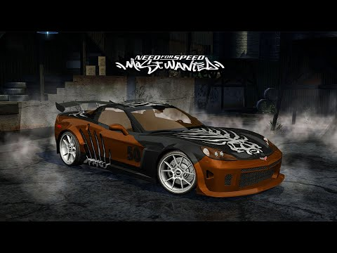

The 2005 Chevrolet Corvette C6.R is a grand tourer racing car built by Pratt & Miller as well as
General Motors for competition in endurance racing.
Most of the street legal Corvette (C6) design remains in the C6.R as they were designed alongside each other.
Most of the retained design resulted in the increased use of lightweight
aluminium and a better designed airflow across the body.
The C6.R saw an innovation in design with the use of an air conditioning system that was better suited to keeping drivers cool at high cockpit temperatures..

At the time, even the standard Corvette C6 was well-liked by critics and the public.
Reviewers liked the car’s improved handling, stronger engine, and improved interior.
Ride quality was noted as being impressively smooth and balanced. Critics praised the car for having improved on the previous Corvette C5 in nearly every way, from performance to refinement to comfort.
The Corvette C6 was regarded as a bargain, with one reviewer noting that anything within $20,000 of the Chevrolet would have a very hard time beating its performance.
The Porsche 911 at the time was several thousand dollars more than the Corvette and could not match its performance.
Today, the Corvette C6 is still regarded as a pre-owned sports car value. Prices for well-kept examples hover between the $30,000 and $40,000 marks, and the performance is comparable to many new cars costing thousands more. Early models are noted as being plagued with quality and mechanical issues, but later versions do not have those problems. Used car shoppers will find an easy time locating several great examples of the C6 on eBay and elsewhere. Even performance-modified versions like the Callaway Corvette are relatively easy to find.
Need For Speed
Forza
The Crew
Gran Turismo
TOP GEAR
Top Gear featured the C6 Corvette in multiple episodes, often praising its performance while sometimes critiquing its refinement.
Jeremy Clarkson was initially skeptical but later praised models like the C6 ZR1 for its immense power and the Z06 for its track performance, while also criticizing the Z06 for its harsh ride and other interior flaws.
The Z06, in particular, set a very fast lap time on the Top Gear test track, faster than many more expensive supercars.
In Apocalypse Clarkson, Jeremy loathes the C4 Corvette for it's lack of speed, appalling handling and horrible ride. He then uses a helicopter gunship to chase down the Corvette being driven by a robot and destroys it.
In Clarkson: At Full Throttle, Jeremy tests the Callaway C4 against the RUF Porsche 911. He loathes the Corvette for being overpowered and not being able to have a chassis to handle that power. He ultimately prefers the RUF.
In Clarkson's Top 100 Cars, Jeremy ranks the C2 Stingray at 97th place, praising the Stingray's looks.
In Series 2, Episode 5, the C5 Corvette is pitted against the Ferrari 360, the Porsche 911 Turbo, the Honda NSX, the Venturi Atlantique and the old nitrous powered Jaguar XJ-S in a race of the nations. It ends up beating the Atlantique but looses to the Honda, the Ferrari and the Porsche, on one count beating the Jag and on another losing.
In Series 4, Episode 10, Richard tests the all new C6 Corvette at the Top Gear Test Track. He criticises the ride, the build quality, the gearbox, the leafspring chassis and the speed with it losing in a drag race to a TVR T350C and a Honda NSX but manages to beat a 911. However he praises the handling, cool features and soundtrack. At the hands of The Stig it sets a lap time of 1:26.8.
In Series 6, Episode 11, James uses a C2 Stingray to help compose the Top Gear Theme
In Clarkson: Heaven and Hell, Jeremy tests the C6 Corvette for the first time. Despite his initial doubts he ends up surprisingly enjoying it, praising it's speed, grip, handling, soundtrack and gizmos being the first Corvette he likes.